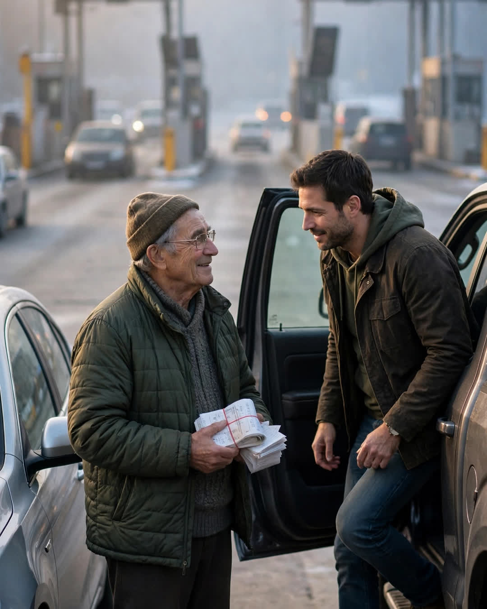

The Toll Booth
A Clipp Kaili original story

For one whole year, I paid the toll for the car behind me — and I never once looked in the mirror to see who it was.
It started the January I turned forty, the winter my life quietly came apart. Divorce finalized in November. The house sold. My father hadn't spoken to me in six years — not since a shouting match in his kitchen the Christmas before Mom died, words about blame and hospitals, the kind that build a wall both men pretend the other one built.
A therapist I saw exactly twice said, "Do one kind thing a day that nobody can trace back to you." So every morning at the Millbrook toll plaza, I handed the attendant two fares.
"For the car behind me too," I'd say. "Don't tell them who."
I never looked back. Looking back makes it a transaction, and I needed it to be a tithe. For a year, I paid for three hundred strangers to pass through a gate a little lighter than they arrived. It didn't fix my life. But it gave my mornings a heartbeat, and some weeks that was enough.
What I didn't know — what I couldn't have known — was about the old silver sedan.
Mr. Osei worked the morning booth, bay three. He told me this part later, over coffee I will owe him forever. Around March, he noticed the same silver sedan timing its mornings to be behind my truck. The driver was an old man in his seventies who would arrive early, park on the shoulder, and wait — sometimes twenty minutes in winter cold — until he saw my truck approach, then pull in behind me.
He wasn't trying to save ninety cents.
Osei finally asked him, in November, why a grown man arranged his mornings around a stranger's toll.
The old man gripped his steering wheel a long time before he answered.
"He's my son," he said. "We don't talk. His mother died and we said things. Every morning he pays for the car behind him, not knowing it's me. It's the only thing I have left of him — he gives it, I receive it, and for ninety cents a day, we're still... we're still in each other's lives. I'm working up the courage to be in his mornings for real. A man my age, paying a debt in toll money. God forgive me, it's the only road I could find back to him."
On the last morning of the year, my truck reached bay three, and Mr. Osei leaned out — but instead of taking my money, he pointed behind me.
The silver sedan was there. And for the first time in three hundred mornings, I looked in the mirror.
My father was already out of his car. Standing in the toll lane in his old church coat, in the December cold, with both hands up and empty like a man surrendering — holding nothing but a year's worth of toll receipts he had kept in a rubber band in his glove box.
He'd saved every one.
We held up traffic for eleven minutes. Nobody honked. Three hundred mornings of strangers, passing through a gate two men had finally stopped pretending was a wall — and the whole plaza understood, the way crowds sometimes do, that they were watching the toll get paid in full.
Dad and I take bay three every Sunday now, on the way to breakfast. We argue about whose turn it is to pay for the car behind us.
Some bridges charge a toll.
Ours charged ninety cents a day, for a year, until two stubborn men could afford the whole truth: the gate was never locked. It was only ever waiting for one of us to look back.
This story is a work of fiction, written to touch hearts and bring families closer.
← Back to all stories